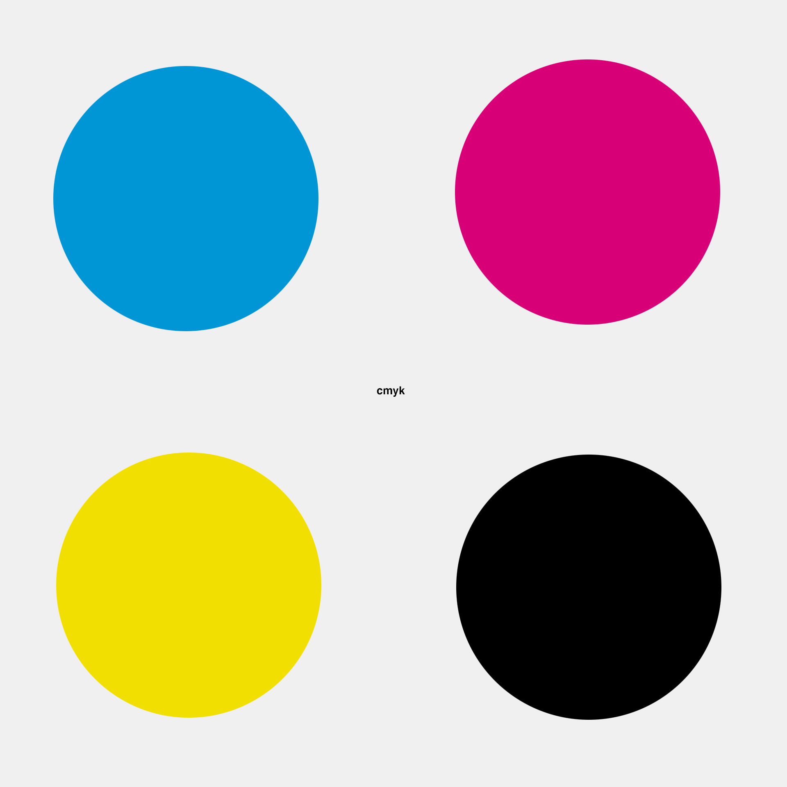

Pixels
Als je van ver kijkt naar bijvoorbeeld een tv scherm, lijkt er niks aan de hand te zijn.
Wanneer je echter van dichtbij datzelfde beeldscherm bekijkt, zul je allemaal gekleurde puntjes zien.
Deze puntjes worden pixels genoemd. Ieder van deze pixels bestaat uit 3 lampjes. Deze lampjes worden zo weergegeven dat
deze kleuren vormen. Daarnaast bestaan er ook allemaal verschillende kleurmodellen.
RGB-model
 Het RGB-model is een van de meest bekende modellen. Het is gebaseerd op de kleuren rood, groen en blauw.
Deze vormen de basis voor alle anderen kleuren. Als je echter een beeldscherm afsluit met zo'n RGB-model, zullen de pixels zwart
van kleur zijn. Dit is als gevolg van het feit dat het RGB-model gebaseerd is op een zwarte achtergrond.
Het RGB-model is een van de meest bekende modellen. Het is gebaseerd op de kleuren rood, groen en blauw.
Deze vormen de basis voor alle anderen kleuren. Als je echter een beeldscherm afsluit met zo'n RGB-model, zullen de pixels zwart
van kleur zijn. Dit is als gevolg van het feit dat het RGB-model gebaseerd is op een zwarte achtergrond.
CMY-model

Omdat het RGB-model gebaseerd is op een zwarte achtergrond, kan deze niet gebruikt worden
bij bijvoorbeeld printen. Papier is namelijk wit en heeft dus een kleurmodel met een wit gebaseerd achtergrond nodig.
Daarom bestaat het CMY-model. In dit model worden 3 kleuren gebruikt: cyaan, magenta en geel. Er wordt ook vaak gesproken over het
CMYK-model. Dit zorgt voor voor veel verwarring, maar heel simpel verwoord, fungeert het extra lettertje K voor de inktkleur zwart.
Deze worden toegevoegd wanneer er zwarte kleuren uitgeprint moeten worden. Een pure cmy zorgt namelijk niet voor een zwarte kleur,
maar eerder een donkergrijze kleur.